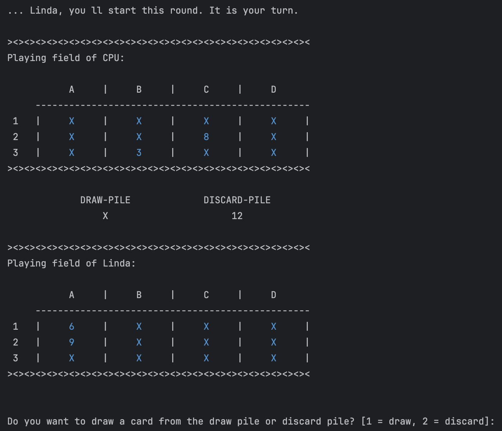
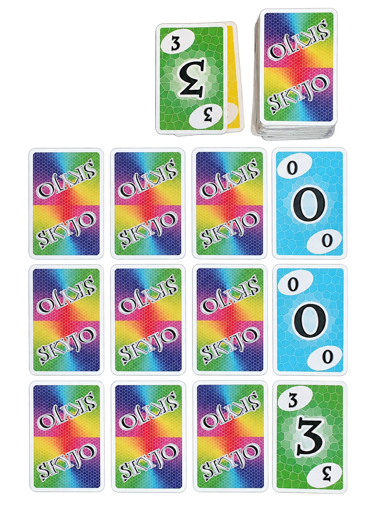

Skyjo .
Recreating a card game as a playable terminal application.
DRAW. SWAP. SCORE.
A game of hidden cards, calculated risks, and an interface made entirely of text. Built to explore the logic behind it.

The choice
I could implement a provided RPG combat system. Or build something of my own.
For the final project of a Kotlin fundamentals course, we had four weeks to apply what we'd learned: branching logic, loops, classes, inheritance, constructors and functions.
I enjoy card and board games, so I chose to recreate Skyjo as a text-based application. I was more drawn to the creative challenge of working out the game's structure and logic than following a predefined assignment.
From tabletop to terminal
Twelve cards. Most of them hidden. Every move changes what you know.
Skyjo is a card game for two or more players. The aim is to finish with as few points as possible. Each player starts with twelve cards in a grid of three rows and four columns and reveals two of them.

HOW IT WORKS
Choose a hidden card from the draw pile or the visible top card from the discard pile.
Swap the card into your field. If you drew it from the deck, you can instead discard it and reveal a hidden card.
Three identical face-up cards in a column can be removed from the field.
A discarded card can be exactly what the next player needs. Improving your own field can also give someone else an advantage.
One round, start to finish.
In my terminal version, one person plays against the CPU. Five moments show the game in action, from the initial setup to the final score.
The recording could not play. Please check that its MP4 file was copied into assets/skyjo.
Starting a round.
The terminal asks for the player’s name and guides them through revealing the first two cards. The inputs happen directly in the terminal.
Who goes first?
The player with the higher total from their revealed cards goes first. If the scores are tied, a coin toss decides.
The recording could not play. Please check that its MP4 file was copied into assets/skyjo.
Draw, swap or reveal.
The terminal guides the player through choosing a card from the draw or discard pile and deciding whether to swap a card or reveal a hidden one.
The CPU takes its turn.
The CPU follows the same rules as the human player, but makes random decisions. Its actions are shown in the terminal. Players continue taking turns until one playing field is fully revealed, bringing the round to an end.
The final score.
At the end of the round, the program calculates both players' scores, displays a scoreboard and announces the winner.
Behind the game
I knew the rules. Figuring out how to turn them into a working program was up to me.
I started with the building blocks: What does a card need to know? How do twelve cards become a playing field? And how do players, piles and turns work together? Those questions guided the classes I built and tested in the terminal.
A card has a value, but that value isn't always visible to the player. In my Card class, front stores the number, flipped tracks whether the card is face up, and surface determines what appears in the terminal. The turnOver() method updates the card's state and display, replacing the hidden X with its actual value.
class Card(
var front: Int,
val BACK: String = "X",
var flipped: Boolean = false
) {
var surface: String = BACK
fun turnOver() {
surface = front.toString()
flipped = true
}
}Individual cards were only the starting point. In Game, I used cards for the draw pile and discardPile for the discard pile, both stored as MutableList<Card> collections. Dealing removes twelve cards from the draw pile for each player's PlayingField, which manages its own list. As the game progresses, drawing, swapping and discarding move cards between these collections.
To select a card, the references map translates its visible position into a list index. For example, 2B → 5 → cards[5] connects a terminal input to the selected card.
Both players follow the same turn sequence, but make their decisions differently. Player handles terminal input and validates the selected card position. ArtificialPlayer inherits from Player and overrides methods such as chooseCard() and drawCard() to make random choices instead. This lets the game reuse the overall turn sequence while giving the CPU its own decision-making behavior.
choice = readln()
while (!currentCards.references.containsKey(choice)) {
choice = readln()
}
return currentCards.references[choice]!!override fun chooseCard(): Int {
return currentCards.references[
currentCards.references.keys.random()
]!!
}Looking back
Four weeks were enough for a playable version. But not for everything I had planned.
By the end of the course, I had built a playable version of Skyjo for one human player and a CPU opponent, with card draws, swaps and scoring. I limited the game to a single round to keep the scope manageable.
Even so, I had taken on more than I could finish in four weeks. Some inputs were more complicated than necessary, and certain situations still caused bugs with card positions and scoring. With more time, I would have fixed those issues, improved the interactions and supported multiple rounds.
I particularly enjoyed working out the game’s structure and logic. At the same time, I realized how important it is to set a realistic scope and prioritize what can be achieved in the time available.